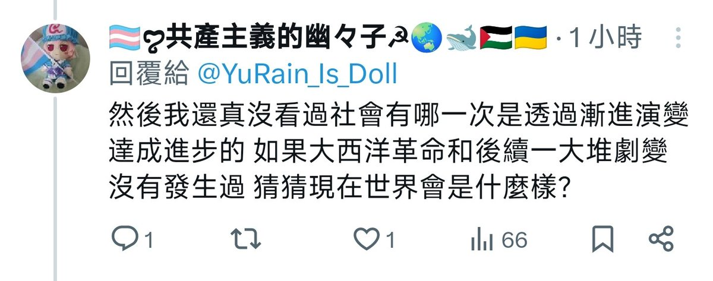
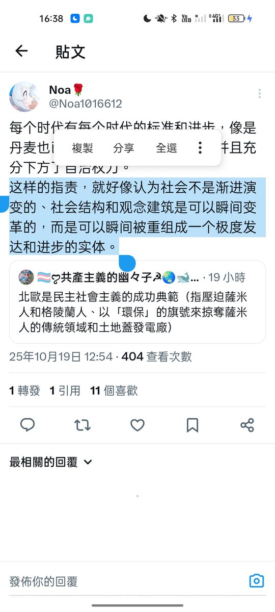

𝐀𝐬𝐡𝐥𝐞𝐲 𝐁𝐥𝐨𝐜𝐤🍥🌹🇹🇼🏳️⚧️
@bolckAshley
@YuRain_Is_Doll 要麼否認剛才的你自己，要麼解釋😁
再說，你自己原本的表述是「如果沒有蘇聯威脅，統治階級就不會放權」，這講法本身就已經不是「之一」，而是把外因當成必要條件了👋


🏳️⚧️ꨄ︎共產主義的幽々子☭🌏🐋🇵🇸🇺🇦
@YuRain_Is_Doll
@bolckAshley 你要不要看看原推的原文是什麼😅 你自己突然跳進來講一個有一大半不同的論點然後再指控對方說「改良沒起過任何效果」都不會覺得好笑嗎😅
再來我說「冷戰時代存在蘇聯對西方統治階級的壓力是迫使統治階級放權的原因之一」 你可以直接滑坡為我把境外勢力干涉當成主因也是有了 https://t.co/Z9qKxXvmAX